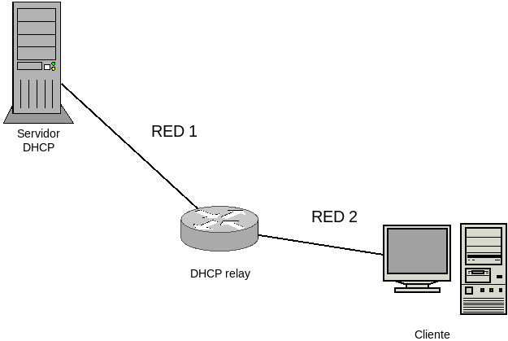

6.1.2. Software¶
6.1.2.1. Clientes¶
En Linux se usan, fundamentalmente, tres clientes:
- dhclient (ya obsoleto)
Es el cliente del ISC y hasta no hace tanto el más habitual en las distribuciones. Su uso es bastante sencillo:
Para pedir configuración para la interfaz eth0:
# dhclient -v eth0
Para desconfigurar la interfaz eth0, advirtiendo al servidor:
# dhclient -r eth0
Si no se quiere avisar al servidor (con lo cual no se liberará la IP), debe usarse la opción -x
Este cliente revisa el fichero
/etc/dhcp/dhclient.confdentro del cual puede manipularse la forma en que se pide la configuración al servidor.
- dhcpcd
Es el sustituto natural del anterior (en Debian a partir de Trixie) y bastante más completo y más flexible. Almacena su configuración en
/etc/dhcpcd.confy en ese archivo, entre otras cosas, permite especificar incluso configuraciones estáticas para interfaces o qué interfaces no queremos configurar a través de la aplicación. Esto es debido a que puede usarse de dos maneras[1]:Gestionado de forma manual las interfaces al estilo de como lo hace dhclient.
Como demonio, lo que determina que cobre sentido lo que acabamos de decir acerca del archivo de configuración. Por ejemplo:
noipv6 # No nos interesa IPv6. denyinterfaces eth2 # No queremos hacernos cargo de eth2 #allowinterfaces eth0 eth1 # Es una alternativa. # eth0 no requiere bloque, ya que se configura de forma predeterminada. # Configuración estática de eth1 interface eth1 static ip_address=192.168.255.2/24 static routers=192.168.255.1 static domain_name_servers=1.1.1.1 8.8.8.8
Con esta configuración[2], podemos configurar las interfaces manipulando el servicio asociado:
# systemctl restart dhcpcd
En cualquier caso, Debian no tiene habilitado el servicio (ya que todo se gestiona con ifupdown), por lo que tendríamos que gestionar manualmente las interfaces.
Cuando no se usa como demonio, se utiliza de modo semejante a dhclient:
# dhcpcd -b eth0 eth1 # Podemos gestionar varias. -b para segundo plano. # dhcpcd eth2 # Rehusará hacer nada con eth2.
Aun usándose de forma manual, el archivo de configuración sigue siendo válido y, por tanto, eth0 se configurará dinámicamente, eth1 recibirá una asignación estática, y eth2 no se configurará en absoluto.
Para liberar las interfaces y desconfigurarlas:
# dhcpcd -k eth0 eth1
que provocará que para eth0 se notifique al servidor la liberación (paquete DHCPRELEASE).
Nota
A diferencia de dhclient, por defecto, las configuraciones dinámicas soportan la técnica IPv4ALL o Zeroconf lo que determina que cuando no existe servidor DHCP, la interfaz se autoconfigura escogiendo una dirección IP de la red
169.254.0.0/16. Este comportamiento, no obstante, puede alterarse añadiendo:noipv4lla la configuración global o a la configuración particular de una interfaz.
- udhcpc
Es el microcliente del proyecto busybox y que suelen usar las distribuciones mínimas como SliTaZ, Alpine o linux empotrados. Su uso básico es el siguiente:
Para pedir configuración para la interfaz eth0:
# udhcpc -b -R -p /var/run/udhcpc.eth0.pid -i eth0 -x hostname:nombre_maquina
donde -x sirve para pedir opciones de configuración al servidor. En el ejemplo, se le ha sugerido que nos adjudique un nombre de máquina (hostname), pero puede sugerirse otras como un tiempo de concesión (lease). Para sugerior varias debe repetirse el argumento.
Para desconfigurar la interfaz y parar el cliente:
# kill -USR2 $(cat /var/run/udhcpc.eth0.pid) # kill -TERM $(cat /var/run/udhcpc.eth0.pid)
6.1.2.2. Servidores¶
6.1.2.2.1. Tipos¶
Un servidor DHCP puede trabajar de tres formas distintas:
Como servidor DHCP en sí proporcionando la información de red a los clientes que lo solicitan y que es la función a la que dedicamos el tema.
Como DHCP relay, en que el servidor se limita a retransmitir los paquetes enviados por el servidor DHCP real. Se usa para resolver el caso en que el servidor DHCP no comparte red con los cientes:

En este caso, el router, además de comunicar ambas redes, retransmite hacia el servidor las peticiones de los clientes y retransmite a los clientes las respuestas del servidor.
Como proxy DHCP, que se limita a complementar la información del servidor DHCP real, comunicando a los clientes la información adicional para el arranque por red. Trataremos este tipo de servidor al tratar el servicio PXE.
6.1.2.2.2. Implementaciones¶
Las implementaciones libres de servidores DHCP más usadas son las siguientes:
- udhcpd
Es el microservidor del proyecto busybox y suele encontrarse en los linux empotrados en algunos dispositivos.
- dnsmasq
Es un servidor ligero que incorpora, además, un DNS y un TFTP. Es más que competente para la resolución de la mayor parte de las situaciones con que nos encontramos en pequeñas redes locales.
- ISC DHP Server
Es el servidor tradicional del ISC (que también patrocina el servidor DNS bind). Es bastante más pesado que el anterior, pero permite un mayor control sobre la configuración.
- ISC KEA
Es el nuevo servidor del ISC, que previsiblemente sustituirá al anterior en el futuro.
Notas al pie